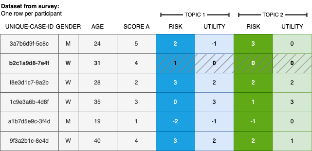
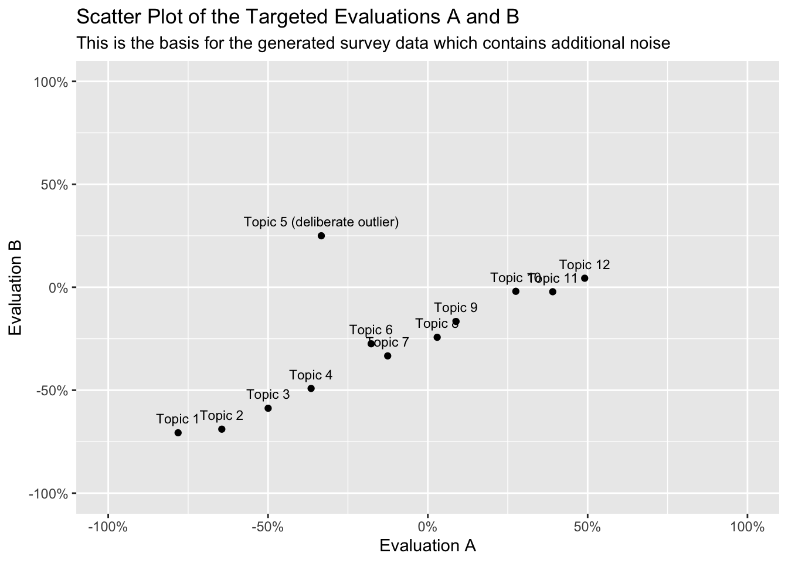

This Quarto notebook is designed to generate synthetic data using the faux package, providing an illustration for the analysis and visualization of micro-scenarios. The generated dataset closely resembles datasets exported from Qualtrics and its Loop & Merge function. The data incorporates pre-defined characteristics, including well-defined means and correlations within and between the evaluation dimensions.
This notebook generates synthetic data to demonstrate the analysis of a micro-scenario based study. The corresponding analysis notebook is located in the same folder. For detailed information on this approach and guidance on designing and analysing studies, please refer to the main article. You can find and cite the main article here:.
Visual Cognitive Mapping: Assessing Social Acceptance of Emerging Technologies through Micro Scenarios, Philipp Brauner & Julia Offermann (2024)
The general concept behind this simulated dataset is to mimic the data export from typical survey software systems, like Qualtrics. However, the data is clean, devoid of additional variables, speeders, or erroneous inputs requiring cleaning. Furthermore, the dataset is structured to exhibit the desired properties of a micro-scenario-based survey, showcasing specific patterns among topics and a defined correlation pattern for evaluation dimensions.
For generating synthetic data, we use the faux package, and guidance for this can be found in the package vignette.
Load libraries
In the analysis, we rely on the tidyverse and ggplot packages. Additionally, for generating synthetic data with specific properties (e.g., pre-defined means and correlations between variables), we utilize the faux package.
library(faux) # create simulated data based on given properties
************
Welcome to faux. For support and examples visit:
https://debruine.github.io/faux/
- Get and set global package options with: faux_options()
************
── Conflicts ────────────────────────────────────────── tidyverse_conflicts() ──
✖ dplyr::filter() masks stats::filter()
✖ dplyr::lag() masks stats::lag()
ℹ Use the conflicted package (<http://conflicted.r-lib.org/>) to force all conflicts to become errors
library(scales) # format_percent
Attaching package: 'scales'
The following object is masked from 'package:purrr':
discard
The following object is masked from 'package:readr':
col_factor
library(ggplot2) # graphicslibrary(ggrepel) # label placement in the scatter plotlibrary(knitr) # Tables
Create Synthetic Data
In this section, we generate synthetic data that simulates properties akin to real survey data. Initially, we create a dataset resembling data from the survey tool Qualtrics. Figure Figure 1 illustrates the structure of a standard dataset from survey tools, where each row represents the responses from a single participant.

Figure 1: Illustration of typical survey data utilizing the micro-scenario approach, incorporating user demographics, additional user factors, and topic evaluations.
The generated dataset will include several variables. Initially, a unique user identifier (id) is assigned, followed by a user variable (e.g., attitude towards a topic). Subsequently, N=12 (adjustable) topic assessments are included, with two variables for each evaluation dimension for each topic. In this instance, perceived risk and perceived utility are used as examples for topic evaluations. However, one can utilize different or additional evaluation dimensions (as detailed in the article).
For the synthetic data, we specify \(N\) topics and two evaluation dimensions, defining that they should be inversely correlated with an intercept.
N <-12# number of topics to simulateTOPICS <-read.csv2("matrixlabels.csv") # Generate mean evaluations A and B, inversly correlated and with some noise, and an interceptevaluationA <-seq(-0.75, 0.50, length.out = N)evaluationB <-seq(-0.75, 0.10, length.out = N)# Add some random noisefor (i in1:N) { evaluationA[i] <- evaluationA[i] +rnorm(1, mean=0, sd=0.05) evaluationB[i] <- evaluationB[i] -rnorm(1, mean=0, sd=0.05) }# Purposefully defined outlierevaluationA[5] <--1/3evaluationB[5] <-+1/4combinedMeans =c(evaluationA, evaluationB)

Figure 2: Target topic evaluations. Noise due to random sampling will be added in a later step.
The variables for the topic evaluations must adhere to a standardized naming scheme, i.e., a01_matrix_02, where 01 represents the ID of the queried topic, 02 stands for the queried evaluation dimension, and matrix denotes the name of the variable block in the survey tool. This is the naming scheme used by Quartics.
Additionally, we specify that the evaluations of the first and second evaluation dimensions are strongly correlated within topics and negatively correlated between topics. The data is randomized to approximately, but not exactly, align with this scheme, simulating a scenario as if it were randomly drawn from a population parametrized in this manner.
# Generate correlation matrix with random correlations in the specified rangegenerate_cor_matrix <-function(n, range =c(0.2, 0.6)) { corr_values <-matrix(runif(n^2, range[1], range[2]), nrow = n)for (i in1:n) {for(j in1:n) { corr_values[i,j] =max(-1, min(1, corr_values[i,j])) # check bounds } }for (i in1:n) {for(j in1:n) { corr_values[i,j] = corr_values[j,i] # symmetric please } }diag(corr_values) <-1# Set diagonal to 1 corr_values}# Generating covariance matrices for variables A and Bcor_matrix_A <-generate_cor_matrix(N)cor_matrix_B <-generate_cor_matrix(N, range =c(0.3, 0.5))# Generating negative correlations between variables A and Bnegative_corr <--.25# r between A and Bcor_matrix_AB <-matrix(negative_corr, nrow = N, ncol = N)# Combining covariance matrices for A, A and B, and B# Must be symmetric and positive-definitecor_matrix <-matrix(0, nrow =2* N, ncol =2* N)cor_matrix[1:N, 1:N] <- cor_matrix_A # upper-leftcor_matrix[(N +1):(2* N), (N +1):(2* N)] <- cor_matrix_B # lower-rightcor_matrix[1:N, (N +1):(2* N)] <- cor_matrix_AB cor_matrix[(N +1):(2* N), 1:N] <-t(cor_matrix_AB) #transposed for neg. covariances
Check the validity of the data
Before proceeding, let’s perform a check. Why? We require a symmetric and positive-definite matrix to generate random data based on the defined parameters. A correlation matrix is, by definition, symmetric and positive semi-definite. If we encounter a correlation matrix that is not positive semi-definite, it could be due to numerical precision issues or errors in computation, particularly when dealing with very large matrices or near-linear dependencies between variables. If this occurs, repeat the steps above—it should work out after a few tries.
Request to the readers: Any suggestions on how to address this issue are appreciated. However, this step is not necessary if you already have real survey data, as it specifically pertains to the creation of synthetic data.
Now, let’s create the synthetic data based on the previously defined means and correlation parameters. Name the variables following the required schema. We provide population parameters and draw a random sample based on these.
data <-rnorm_multi(varnames = varnames,n =100, # sample size, i.e., number of participants in the surveymu = combinedMeans,sd =0.25,r = cor_matrix,empirical =FALSE)
Recode data
Finally, we record the data to resemble typical survey data. Firstly, ensure that the bounds are met (e.g., values between \(-1\) and \(+1\); due to random sampling, this may not always be the case). Next, convert the percent scores to the typical survey data domain, i.e., discrete values from \(1\) to \(7\).
Ultimately, let’s add a participant ID and a simulated user variable, calculated from the already simulated data and therefore strongly correlated.
data <- data %>% dplyr::mutate(id =paste0("fakeparticipantid-", row_number())) %>% dplyr::mutate(uservariable =rnorm_pre(a1_matrix_1+a2_matrix_1, mu =10, sd =2, r =0.5)) %>% dplyr::relocate(id, uservariable)
Save data
Finally, we save the generated data to an RDS file.
saveRDS(data, "syntheticdata.rds")
That file can be used for the actual analysis and visualization (this main notebook utilizes this data).
Acknowledgements:
This approach evolved over time and through several research projects.
I would like to thank all those who have directly or indirectly, consciously or unconsciously, inspired me to take a closer look at this approach and who have given me the opportunity to apply this approach in various contexts. In particular, I would like to thank:
Julia Offermann, for indispensable discussions about this approach and so much encouragement and constructive comments during the last meters of the manuscript.
Ralf Philipsen, without whom the very first study with that approach would never have happened, as we developed the crazy idea to explore the benefits of barriers of using questions in Limesurvey.
Martina Ziefle for igniting scientific curiosity and motivating me to embark on a journey of boundless creativity and exploration.
Felix Glawe, Luca Liehner, and Luisa Vervier for working on a study that took this concept to another level.
Julian Hildebrandt for in-depth discussions on the approach and for validating the accompanying code.
Tim Schmeckel for feedback on the draft of this article.
Throughout the process I received feedback from reviewers that helped to question this approach and improve the foundation of this approach.
No scientific method of the social sciences alone will fully answer all of our questions.
We hope that this method provides a fresh perspective on exciting and relevant questions.
Funded by the Deutsche Forschungsgemeinschaft (DFG, German Research Foundation) under Germany’s Excellence Strategy – EXC- 2023 Internet of Production – 390621612.
![]()